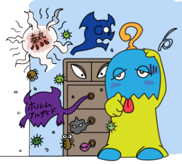
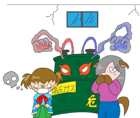
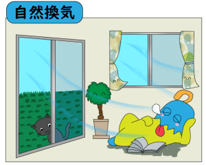
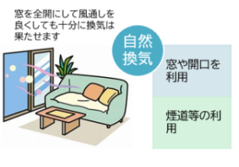
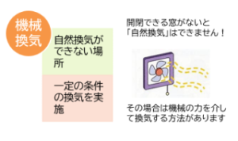

oshiete_kannki
①換気の目的
| 「ねぇ、なぜ換気って必要なの？」 「換気の目的って何？」 |
|
|  |
|
| 換気を簡単に説明すると「室内の空気を入れ替える為」です。 なぜ換気が必要か説明しましょう。 人は呼吸により酸素（Ｏ2）を吸って、炭酸ガス（CO2）を排出しています。 更に室内で仕事や家事などの活動をしている時は、呼吸による炭酸ガス（CO2）濃度の上昇と、人の仕事量に応じて体内から発汗等による老廃物も空中に発散されています。 それだけではありません。空気中のほこりや細菌、ウイルスといった目に見えない物も、当然浮遊しています。 |
| 「こんな環境じゃ、人の健康が害されてしまう…」 | |
 |
良好な居住環境を保つ為には、常に室内の空気を入れ替え 室内の空気を屋外とほぼ同じレベルに維持させる為には、 「換気」という作用が必要になります。 |
③換気が必要な区分け
換気を大きく分けると、以下の4つに分類されます
|
||||||||
|  |
| 「換気扇や送風機で換気しなくても、窓を全開にして風通しを良くするだけでもいいの？」 | |
|  | |
|  |
|
|  | |
| 換気設備としては、以下の3種類に分かれています。 | |
| a. | 自然換気設備 風力・浮力等の自然の力を利用するものとして、吸気口や排気筒の組み合わせによって形成されるもの |
| b. | 機械換気設備 機械の力（換気扇や送風機）などの機械の力を利用したもの |
| c. | 中央管理方式の空気調和設備 空気を浄化して、その温度・湿度・風量を自動的に調整して供給し、排出ができる設備を設け、機械換気設備に空気を浄化する機能などを組み込んだもの |